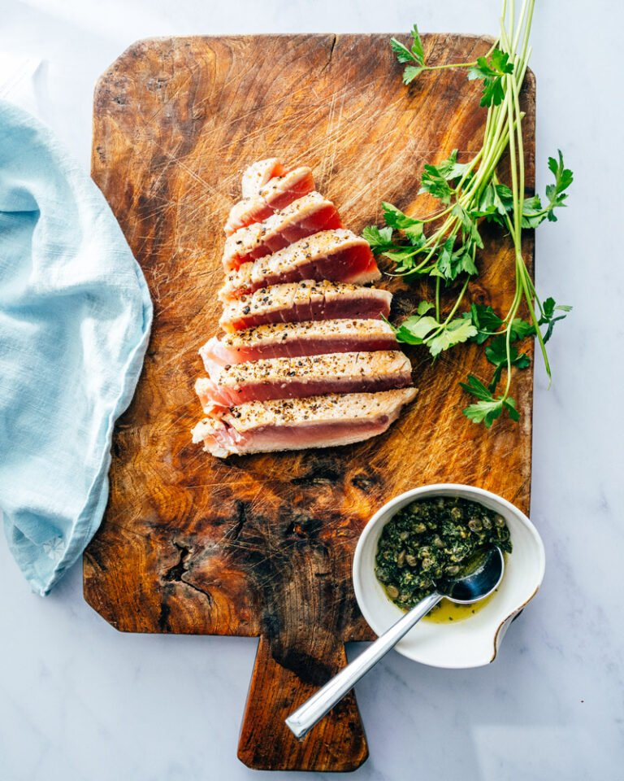

Home
Awesome Tuna Steak

Awesome Tuna Steak
This is the perfect tuna for a nice dinner.
It is't difficult and can be made fairly easily.
It can be cooked in less then 20 minutes.
It also does not have a long list of ingredients to find or buy.
Ingredients
- 1.5 inch thick Tuna Steak
- Salt 1/2 teaspoon
- Pepper 1/2 teaspoon
- Olive oil 2 tblspoons
- Sesame seeds 2 tblspoons
- Soy Sauce 2 tblsoons
- First let the tuna sit out and reach room temperature.
This is important to get an even cook.
- Get a bowl and add the ingredients together to make
a marinade.
- Once the tuna has reached room temp let it sit in the marinade for ten
minutes to soak in.
- While the tuna is marinading put a thick bottom pan on the stove
on high.
- Place the tuna in the pan and cook on both side, two minutes per side.